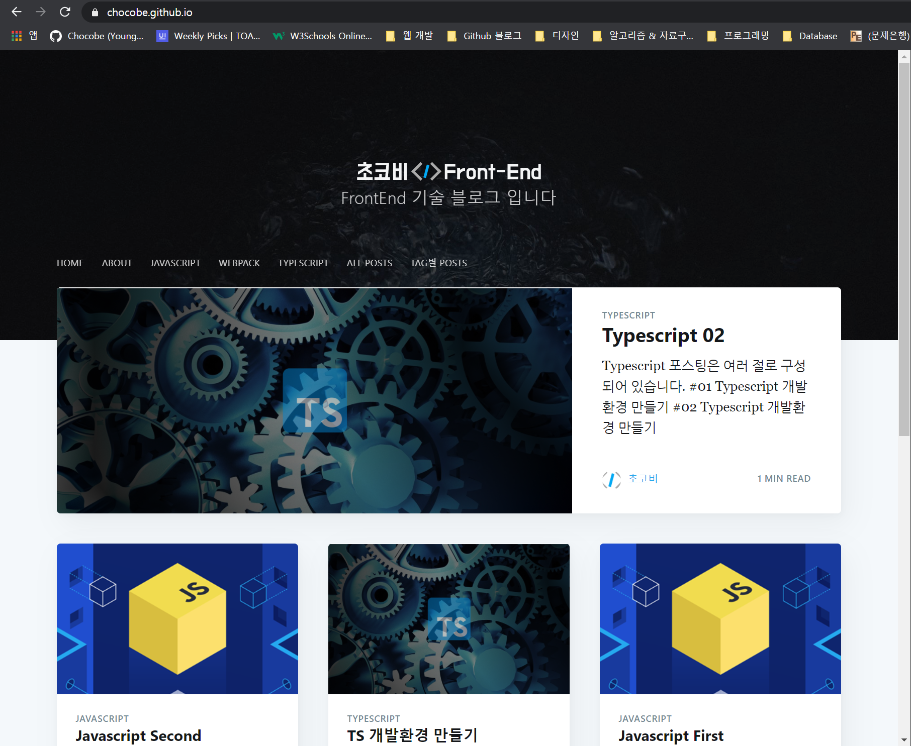

#01 Github Page 포스팅 개요
Github Page는 Github에서 제공하는 정적 홈페이지 호스팅 서비스 입니다.
공식 홈페이지: https://pages.github.com/
정적 홈페이지는 게시물(정보)를 공유하기 위한 목적으로, DB를 사용하지 않는 홈페이지로 이해하면 될 것 같습니다.
요즘은 많은 개발자 분들이 기술 블로그를 운영하며, 소중한 지식과 정보를 공유해 주고 있습니다.
만약 자신만의 기술 블로그를 만든다면, Back-End와 DB를 사용하지 않고 기술 포스팅에만 집중할 수 있는 정적 홈페이지로도 충분할 것입니다.
이 블로그 역시 Github Page에 호스팅한 정적 홈페이지 입니다.

정적 홈페이지를 만들기 위한 선택지는 다양한 방법이 있습니다.
- 네이버 블로그
- 티스토리
- 기타 등등..
위와 같은 방법들은 이미 제공하는 템플릿에 맞춰야 하기 때문에, 커스터마이징에 한계가 있습니다.
만약 자신만의 유니크한 블로그를 만들고 싶다면, Github Page 는 좋은 선택이 될 수 있습니다.
Github Page는 오로지 호스팅할 수 있는 공간만을 제공하기 때문에, 처음부터 끝까지 만들어야 하며, 이러한 특징 때문에 자신만의 블로그를 만들 수 있습니다.
물론 정말로 처음부터 끝까지 만들지는 않습니다.
Jekyll 이라는 정적 홈페이지 생성기를 사용하여 마음에 드는 템플릿을 선택하고 커스터마이징 하는 방식으로 만들 수 있기 때문에, 설정만으로도 블로그가 만들어 집니다.
또한 각 포스팅 작성을 위해 HTML 이나 CSS 를 작성하는 것이 아닌, Markdown 문서 하나만 만들어도 Jekyll 이 페이지로 생성해 줍니다.
(여기서 커스터마이징 까지 한다면, 유니크한 블로그가 되겠죠 ㅎㅎ)
저의 Github Page 포스팅 시리즈는 Github Page를 사용하여 홈페이지의 기본을 구축하고, 배포하는 방법에 대해 작성하고자 합니다.
다양한 시도를 해본 상태가 아닌, 현재 저의 블로그 구축방법에 대한 기록 정도로 읽어주시면 감사하겠습니다 😊
Github Page 전체 목차 입니다.
- #01 Github Page 포스팅 개요
- #02 Github Page를 위한 Jekyll 환경구축
- #03 사이트 설정 (_config.yml)
- #04 작성자(저자) 설정 (authors.yml)
- #05 태그 설정 (tags.yml)